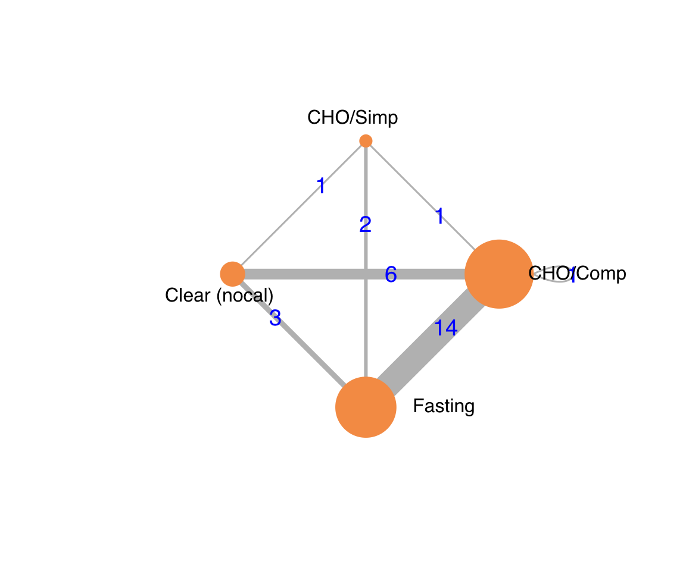

Last updated: 2021-10-20
Checks: 6 1
Knit directory: Fasting/
This reproducible R Markdown analysis was created with workflowr (version 1.6.2). The Checks tab describes the reproducibility checks that were applied when the results were created. The Past versions tab lists the development history.
The R Markdown is untracked by Git. To know which version of the R Markdown file created these results, you’ll want to first commit it to the Git repo. If you’re still working on the analysis, you can ignore this warning. When you’re finished, you can run wflow_publish to commit the R Markdown file and build the HTML.
Great job! The global environment was empty. Objects defined in the global environment can affect the analysis in your R Markdown file in unknown ways. For reproduciblity it’s best to always run the code in an empty environment.
The command set.seed(20201201) was run prior to running the code in the R Markdown file. Setting a seed ensures that any results that rely on randomness, e.g. subsampling or permutations, are reproducible.
Great job! Recording the operating system, R version, and package versions is critical for reproducibility.
Nice! There were no cached chunks for this analysis, so you can be confident that you successfully produced the results during this run.
Great job! Using relative paths to the files within your workflowr project makes it easier to run your code on other machines.
Great! You are using Git for version control. Tracking code development and connecting the code version to the results is critical for reproducibility.
The results in this page were generated with repository version ad6b73c. See the Past versions tab to see a history of the changes made to the R Markdown and HTML files.
Note that you need to be careful to ensure that all relevant files for the analysis have been committed to Git prior to generating the results (you can use wflow_publish or wflow_git_commit). workflowr only checks the R Markdown file, but you know if there are other scripts or data files that it depends on. Below is the status of the Git repository when the results were generated:
Ignored files:
Ignored: .DS_Store
Ignored: .Rhistory
Ignored: .Rproj.user/
Ignored: _@@/.DS_Store
Ignored: _@@/Fasting-master-old/.DS_Store
Ignored: _@@/foot_unique.csv
Ignored: _@@/notes.txt
Ignored: _@@/outcome_list.txt
Ignored: _@@/rgv_cinema.csv
Ignored: _@@/rgv_cinema_12.13_7_5_2021.cnm
Ignored: _@@/rgv_cinema_RoB_chart_old.png
Ignored: _@@/rgv_cinema_netplot_old.png
Ignored: _@@/rgv_cinema_random_MD_Report.csv
Ignored: _@@/rgv_meta_dat.csv
Ignored: _@@/study_char_table_cho.csv
Ignored: code/.DS_Store
Ignored: code/_oldCode/
Ignored: code/a_temp_to_run.R
Ignored: code/anchors_cho.txt
Ignored: code/anchors_prot.txt
Ignored: code/calc_mn_sd_med_iqr_range.R
Ignored: code/nma_debug_copy.R
Ignored: code/snips.R
Ignored: code/used_files_dates.txt
Ignored: data/CHOComplicationList_012521.xlsx
Ignored: data/CHOProteinDetail_031021.xlsx
Ignored: data/GumOutcomes_102820.xlsx
Ignored: data/GumOutcomes_102820_old.xlsx
Ignored: data/ProteinSOE_013121.xlsx
Ignored: data/ProteinSOE_121620.xlsx
Ignored: data/SOE_070621_final.xlsx
Ignored: data/SOE_CHO_051721_up.xlsx
Ignored: data/SOE_CHO_060721_up.xlsx
Ignored: data/SOE_CHO_060721_up_mg.xlsx
Ignored: data/SOE_Gum_020421.xlsx
Ignored: data/SOE_Protein_021021.xlsx
Ignored: data/_old/
Ignored: data/contOutcomes_2021-10-06-20-34-40.csv
Ignored: data/contOutcomes_2021-10-06-21-20-19.csv
Ignored: data/dichotOutcomes_2021-07-07-15-57-51.csv
Ignored: data/dichotOutcomes_2021-10-06-20-34-07.csv
Ignored: data/distillersr-Preoperative_Fasting_2020-07-08-17-59-49.xlsx
Ignored: data/fasting_table_add_102720.csv
Ignored: data/gum_soe_112120.xlsx
Ignored: data/hdi_072021.csv
Ignored: data/hunger_rob_summary.svg
Ignored: data/hunger_rob_traffic.svg
Ignored: data/incl_mg_distsr_fasting_2020-11-21_OLD.csv
Ignored: data/incl_mg_distsr_fasting_2021-03-09-17-42-12.csv
Ignored: data/likertOutcomes_2021-10-06-20-34-20.csv
Ignored: data/protein_detail_102320.xlsx
Ignored: data/rob_2021-04-17-11-47-25.csv
Ignored: data/rob_2021-06-22-12-11-42.csv
Ignored: data/rob_2021-06-22-15-06-55.csv
Ignored: data/rob_2021-10-07-16-40-09.csv
Ignored: data/studyArm_2021-10-06-20-35-08.csv
Ignored: data/studyChar_2021-10-07-15-30-19.csv
Ignored: rgv_cinema.csv
Ignored: used_files_dates.txt
Untracked files:
Untracked: _@@/Carbohydrate Drinks.html
Untracked: _@@/Fasting-master_old.zip
Untracked: _@@/all_arms.csv
Untracked: _@@/american-medical-association.csl
Untracked: _@@/anesthesiology.csl
Untracked: _@@/cho_amts.csv
Untracked: _@@/nma_final_working.Rmd
Untracked: _@@/rgv_cinema_11.28_10_17_2021.cnm
Untracked: _@@/thirst_nma_working.R
Untracked: _site.yml_back
Untracked: analysis/.gitignore
Untracked: analysis/jama.csl
Untracked: analysis/nma_hunger_thirst.Rmd
Untracked: code/.gitignore
Untracked: code/bayes_sensitivity.R
Untracked: code/bugsnet_test_script.R
Untracked: code/calculations.R
Untracked: code/cho_010420.Rmd
Untracked: code/cho_nausea.R
Untracked: code/clear_outcomes.R
Untracked: code/createCinemaFile.R
Untracked: code/discard.R
Untracked: code/fasting_descriptive.R
Untracked: code/functions.R
Untracked: code/gum_summary_070121.R
Untracked: code/helpers.R
Untracked: code/helpers_old.R
Untracked: code/hrs.R
Untracked: code/hungerRateClear.R
Untracked: code/meanLogFunctions.R
Untracked: code/metaHungerClear.R
Untracked: code/nma_sensitivity.R
Untracked: code/raw_log.R
Untracked: code/robGum.R
Untracked: code/rob_021121.R
Untracked: code/rob_protein.R
Untracked: code/rob_summary.R
Untracked: code/rob_summary_mg.R
Untracked: code/rob_traffic_light.R
Untracked: code/rob_traffic_light_mg copy.R
Untracked: code/rob_traffic_light_mg.R
Untracked: code/select_refids_summary.R
Untracked: code/simp_comp_code.R
Untracked: code/skeleton.bib
Untracked: code/summary_071921.html
Untracked: code/summary_arxiv_072221.Rmd
Untracked: code/summary_arxiv_072221.pdf
Untracked: code/summary_arxiv_072221.tex
Untracked: code/summary_gum_arxiv_072221.Rmd
Untracked: code/summary_gum_arxiv_072221.pdf
Untracked: code/summary_gum_arxiv_072221.tex
Untracked: code/summary_prot_arxiv_072221.Rmd
Untracked: code/summary_prot_arxiv_072221.pdf
Untracked: code/summary_prot_arxiv_072221.tex
Untracked: code/timePlot.R
Untracked: data/.gitignore
Untracked: figures/
Note that any generated files, e.g. HTML, png, CSS, etc., are not included in this status report because it is ok for generated content to have uncommitted changes.
These are the previous versions of the repository in which changes were made to the R Markdown (analysis/nma_hunger_thirst.Rmd) and HTML (docs/nma_hunger_thirst.html) files. If you’ve configured a remote Git repository (see ?wflow_git_remote), click on the hyperlinks in the table below to view the files as they were in that past version.
| File | Version | Author | Date | Message |
|---|---|---|---|---|
| html | ad6b73c | Mark Grant | 2021-10-20 | fixed hunger thirst network plots |
| html | 99ed690 | Mark Grant | 2021-10-20 | hunger thirst nma added other updated |
Table 1. Adult randomized controlled trials. Patient-rated preoperative hunger according to fasting, liquid and volume.
| Study | Liquid | N | > 6 | 6→2 | 2 | Scalea | M (SD) | Med (IQR) | Range |
|---|---|---|---|---|---|---|---|---|---|
| Adult, Surgical | |||||||||
| RCT | |||||||||
| Hausel 2001 | Fasting | 86 | 0→100 | 35 (10-62) | (3-77) | ||||
| Placebo | 86 | 800 | 400 | 34 (10-68) | (3-84) | ||||
| CHO/Comp | 80 | 800 | 400 | 18 (5-42) | (1-73) | ||||
| Breuer 2006 | Fasting | 44 | 0→100 | 4 | (0-60) | ||||
| Placebo | 60 | 800 | 400 | 5 | (0-80) | ||||
| CHO/Comp | 56 | 800 | 400 | 3 | (0-100) | ||||
| Melis 2006 | Fasting | 9 | 0→100 | -6 (25)b | |||||
| CHO/Simp | 10 | 400 | 1 (68)b | ||||||
| CHO/Comp | 10 | 400 | -16 (31)b | ||||||
| Helminen 2009 | Fasting | 73 | 0→10 | 3 (0-5) | |||||
| CHO/Comp | 70 | 400 | 0 (0-2) | ||||||
| Lauwick 2009 | Water | 100 | 100 | 0→100 | 21.0 (30.0) | ||||
| CHO/Comp | 100 | 400 | 15.0 (30.0) | ||||||
| Wang 2010 | Fasting | 16 | 0→100 | 28 | (13-50) | ||||
| Placebo | 16 | 400 | 22 | (9-37) | |||||
| CHO/Comp | 16 | 400 | 18 | (7-37) | |||||
| Yagmurdur 2011 | Fasting | 22 | 0→100 | 69 | (65-73) | ||||
| CHO/Comp | 22 | 800 | 400 | 22 | (19-25) | ||||
| Tran 2013 | Fasting | 19 | 0→100 | 49 (29-64) | |||||
| CHO/Comp | 19 | 800 | 400 | 25 (7-43) | |||||
| Canbay 2014 | Fasting | 25 | 0→3NRS | 0 (0.0-1.0) | (0-2) | ||||
| CHO/Comp | 25 | 800 | 400 | 0 (0.0-0.0) | (0-1) | ||||
| Raksakietisak 2014 | Fasting | 50 | 0→10 | 2.3 (2.4) | |||||
| CHO/Simp | 48 | 400 | 400 | 2.6 (2.3) | |||||
| Tsutsumi 2016 | Water | 12 | 450 | 0→100 | 43 | (30-59) | |||
| CHO/Simp/Prot | 12 | 600 | 13 | (3-20) | |||||
| Doo 2018 | Fasting | 25 | 0→10NRS | 1 (0-2) | |||||
| CHO/Comp | 25 | 400 | 1 (0-2) | ||||||
| Helminen 2019 | Fasting | 56 | 0→100 | 18 (5-50) | |||||
| CHO/Comp/Prot | 57 | 200 | 10 (0-30) | ||||||
| Rizvanovic 2019 | Fasting | 25 | 0→100 | 23.8 (15.0) | |||||
| CHO/Comp | 25 | 400 | 200 | 1.6 (13.5) | |||||
| Wang 2019 | Fasting | 37 | 0→10 | 4.0 (2.1) | |||||
| CHO/Comp | 36 | 710 | 355 | 2.5 (1.5) | |||||
| Zhang 2019 | Fasting | 29 | 0→100 | 40 (40-50) | |||||
| CHO/Comp | 29 | 800 | 400 | 10 (10-10) | |||||
| Panebianco 2020 | Fasting | 22 | 0→2NRS | 1.00 | 1 | (0-2) | |||
| CHO/Comp | 10 | 800 | 400 | 0.30 | 0 | (0-1) | |||
| Wendling 2020 | Fasting | 22 | 0→100 | 9.5 (3.4)c | |||||
| CHO/Simp | 20 | 710 | 355 | -6.0 (4.0)c | |||||
| CHO/Comp | 25 | 710 | 355 | -11.2 (5.5)c | |||||
| RCT: randomized controlled trial; M: mean; SD: standard deviation; Med: median; IQR: interquartile range; NRS: numeric rating scale. | |||||||||
| a Arrow (→) indicates best to worst hunger (visual analogue if not noted NRS). | |||||||||
| b Within group change from baseline; reported IQR as a single value. | |||||||||
| c Difference from before beverage consumption to 1 hr post-consumption. | |||||||||
Figure 1. Network plot of comparators in included studies.
Table 2. Number of studies and patients in comparisons represented in the network.
| Comparison | Studies | Patients |
|---|---|---|
| CHO/Comp vs. CHO/Simp | 1 | 45 |
| CHO/Comp vs. Clear (nocal) | 4 | 514 |
| CHO/Comp vs. Fasting | 14 | 996 |
| CHO/Simp vs. Clear (nocal) | 1 | 24 |
| CHO/Simp vs. Fasting | 2 | 140 |
| Clear (nocal) vs. Fasting | 3 | 308 |
| CHO: carbohydrate; Comp: complex; Prot: protein. |
Table 3. Standardized mean differences in patient-rated hunger and 95% CIs from network meta-analysis. Comparisons are top to bottom below the diagonal (eg, CHO/Comp vs. CHO/Simp 0.49). Estimates above the diagonal include only the direct evidence for the same comparison. Discrepancies are reflect inconsistencies as displayed in Figure 1. Despite inconsistencies, the results offer no evidence to support a difference between complex and simple carbohydrates.
| CHO/Comp | -1.17 (-2.59, 0.26) | -0.27 (-0.94, 0.41) | -0.92 (-1.30, -0.55) |
| 0.49 (-0.37, 1.36) | CHO/Simp | -4.27 (-6.20, -2.34) | -1.43 (-2.44, -0.42) |
| -0.72 (-1.33, -0.12) | -1.22 (-2.17, -0.26) | Clear (nocal) | -0.17 (-0.95, 0.62) |
| -0.84 (-1.21, -0.47) | -1.34 (-2.18, -0.50) | -0.12 (-0.74, 0.50) | Fasting |
| I2 88% (95% CI, 83%-92%) |
Figure 1. Forest plot using using complex carbohydrates as the reference comparator.
| Version | Author | Date |
|---|---|---|
| 99ed690 | Mark Grant | 2021-10-20 |
Figure 2. Comparison of direct and indirect evidence for each comparison in the network.
| Version | Author | Date |
|---|---|---|
| 99ed690 | Mark Grant | 2021-10-20 |
Table 4. Adult randomized controlled trials. Patient-rated preoperative thirst according to fasting, liquid and volume.
| Study | Liquid | N | > 6 | 6→2 | 2 | Scalea | M (SD) | Med (IQR) | Range |
|---|---|---|---|---|---|---|---|---|---|
| Adult, Surgical | |||||||||
| RCT | |||||||||
| Hausel 2001 | Fasting | 86 | 0→100 | 40 (20-66) | (7-81) | ||||
| Placebo | 86 | 800 | 400 | 31 (14-65) | (4-79) | ||||
| CHO/Comp | 80 | 800 | 400 | 24 (7-42) | (3-70) | ||||
| Henriksen 2003 | Water | 16 | 0→10 | 3.38 (2-7) | |||||
| CHO/Comp/Prot | 15 | 400 | 400 | 3.14 (0-3) | |||||
| CHO/Comp | 17 | 400 | 400 | 3.17 (1-3) | |||||
| Breuer 2006 | Fasting | 44 | 0→100 | 30 | (0-90) | ||||
| Placebo | 60 | 800 | 400 | 8 | (0-17) | ||||
| CHO/Comp | 56 | 800 | 400 | 7 | (0-75) | ||||
| Melis 2006 | Fasting | 9 | 0→100 | 34 (34)b | |||||
| CHO/Simp | 10 | 400 | -7 (39)b | ||||||
| CHO/Comp | 10 | 400 | 0 (18)b | ||||||
| Helminen 2009 | Fasting | 73 | 0→10 | 2 (0-5) | |||||
| CHO/Comp | 70 | 400 | 1 (0-4) | ||||||
| Lauwick 2009 | Water | 100 | 100 | 0→100 | 28.0 (30.0) | ||||
| CHO/Comp | 100 | 400 | 18.0 (20.0) | ||||||
| Wang 2010 | Fasting | 16 | 0→100 | 34 | (19-60) | ||||
| Placebo | 16 | 400 | 17 | (6-53) | |||||
| CHO/Comp | 16 | 400 | 20 | (8-59) | |||||
| Yagmurdur 2011 | Fasting | 22 | 0→100 | 60 | (56-64) | ||||
| CHO/Comp | 22 | 800 | 400 | 20 | (16-24) | ||||
| Tran 2013 | Fasting | 19 | 0→100 | 50 (24-70) | |||||
| CHO/Comp | 19 | 800 | 400 | 10 (7-34) | |||||
| Canbay 2014 | Fasting | 25 | 0→3NRS | 1 (0.0-1.0) | (0-2) | ||||
| CHO/Comp | 25 | 800 | 400 | 0 (0.0-0.5) | (0-1) | ||||
| Raksakietisak 2014 | Fasting | 50 | 0→10 | 2.2 (2.2) | |||||
| CHO/Simp | 48 | 400 | 400 | 2.4 (2.4) | |||||
| Tsutsumi 2016 | Water | 12 | 450 | 0→100 | 28 | (13-30) | |||
| CHO/Simp/Prot | 12 | 600 | 12 | (10-15) | |||||
| Doo 2018 | Fasting | 25 | 0→10NRS | 2 (1-2) | |||||
| CHO/Comp | 25 | 400 | 1 (0-2) | ||||||
| Helminen 2019 | Fasting | 56 | 0→100 | 40 (8-63) | |||||
| CHO/Comp/Prot | 57 | 200 | 22 (6-50) | ||||||
| Rizvanovic 2019 | Fasting | 25 | 0→100 | 20.8 (11.0) | |||||
| CHO/Comp | 25 | 400 | 200 | 4.2 (18.0) | |||||
| Wang 2019 | Fasting | 37 | 0→10 | 4.0 (1.9) | |||||
| CHO/Comp | 36 | 710 | 355 | 2.9 (1.4) | |||||
| Zhang 2019 | Fasting | 29 | 0→100 | 55 (40-65) | |||||
| CHO/Comp | 29 | 800 | 400 | 10 (10-20) | |||||
| Panebianco 2020 | Fasting | 22 | 0→2NRS | 1.20 | 1 | (0-2) | |||
| CHO/Comp | 10 | 800 | 400 | 0.20 | 0 | (0-1) | |||
| Wendling 2020 | Fasting | 22 | 0→100 | 1.5 (5.8)c | |||||
| CHO/Simp | 20 | 710 | 355 | -15.6 (5.4)c | |||||
| CHO/Comp | 25 | 710 | 355 | -17.1 (7.5)c | |||||
| RCT: randomized controlled trial; M: mean; SD: standard deviation; Med: median; IQR: interquartile range; NRS: numeric rating scale. | |||||||||
| a Arrow (→) indicates best to worst thirst (visual analogue if not noted NRS). | |||||||||
| b Within group change from baseline; reported IQR as a single value. | |||||||||
| c Difference from before beverage consumption to 1 hr post-consumption. | |||||||||
Figure 3. Network plot of comparators in included studies.

Table 5. Number of studies and patients in comparisons represented in the network.
| Comparison | Studies | Patients |
|---|---|---|
| CHO/Comp vs. CHO/Comp | 4 | 128 |
| CHO/Comp vs. CHO/Simp | 1 | 45 |
| CHO/Comp vs. Clear (nocal) | 8 | 642 |
| CHO/Comp vs. Fasting | 14 | 996 |
| CHO/Simp vs. Clear (nocal) | 1 | 24 |
| CHO/Simp vs. Fasting | 2 | 140 |
| Clear (nocal) vs. Fasting | 3 | 308 |
| CHO: carbohydrate; Comp: complex; Prot: protein. |
Table 6. Standardized mean differences in patient-rated thirst and 95% CIs from network meta-analysis. Comparisons are top to bottom below the diagonal (eg, CHO/Comp vs. CHO/Simp 0.48). Estimates above the diagonal include only the direct evidence for the same comparison. Discrepancies are reflect inconsistencies as displayed in Figure 3. Despite inconsistencies, the results offer no evidence to support a difference between complex and simple carbohydrates.
| CHO/Comp | -0.23 (-1.68, 1.21) | -0.21 (-0.84, 0.41) | -1.09 (-1.47, -0.70) |
| 0.48 (-0.39, 1.35) | CHO/Simp | -3.46 (-5.29, -1.64) | -1.16 (-2.17, -0.14) |
| -0.44 (-1.01, 0.13) | -0.92 (-1.87, 0.02) | Clear (nocal) | -0.98 (-1.80, -0.17) |
| -1.03 (-1.41, -0.65) | -1.51 (-2.36, -0.66) | -0.59 (-1.19, 0.01) | Fasting |
| I2 88% (95% CI, 83%-92%) |
Figure 3. Forest plot using using complex carbohydrates as the reference comparator.
| Version | Author | Date |
|---|---|---|
| 99ed690 | Mark Grant | 2021-10-20 |
Figure 4. Comparison of direct and indirect evidence for each comparison in the network.
| Version | Author | Date |
|---|---|---|
| 99ed690 | Mark Grant | 2021-10-20 |
R version 4.1.1 (2021-08-10)
Platform: x86_64-apple-darwin17.0 (64-bit)
Running under: macOS Big Sur 10.16
Matrix products: default
BLAS: /Library/Frameworks/R.framework/Versions/4.1/Resources/lib/libRblas.0.dylib
LAPACK: /Library/Frameworks/R.framework/Versions/4.1/Resources/lib/libRlapack.dylib
locale:
[1] en_US.UTF-8/en_US.UTF-8/en_US.UTF-8/C/en_US.UTF-8/en_US.UTF-8
attached base packages:
[1] stats graphics grDevices utils datasets methods base
other attached packages:
[1] netmeta_2.0-0 meta_5.0-0 formattable_0.2.1 naniar_0.6.1
[5] forcats_0.5.1 stringr_1.4.0 dplyr_1.0.7 purrr_0.3.4
[9] readr_2.0.2 tidyr_1.1.4 tibble_3.1.5 ggplot2_3.3.5
[13] tidyverse_1.3.1 Cairo_1.5-12.2 countrycode_1.3.0 janitor_2.1.0
[17] kableExtra_1.3.4 BUGSnet_1.0.4 rjags_4-12 coda_0.19-4
[21] multinma_0.3.0
loaded via a namespace (and not attached):
[1] minqa_1.2.4 colorspace_2.0-2 ellipsis_0.3.2
[4] visdat_0.5.3 evd_2.3-3 rprojroot_2.0.2
[7] snakecase_0.11.0 fs_1.5.0 rstudioapi_0.13.0-9000
[10] rstan_2.21.2 bit64_4.0.5 fansi_0.5.0
[13] lubridate_1.8.0 mathjaxr_1.4-0 xml2_1.3.2
[16] codetools_0.2-18 splines_4.1.1 extrafont_0.17
[19] knitr_1.36 jsonlite_1.7.2 workflowr_1.6.2
[22] nloptr_1.2.2.2 broom_0.7.9 Rttf2pt1_1.3.9
[25] dbplyr_2.1.1 compiler_4.1.1 httr_1.4.2
[28] backports_1.2.1 assertthat_0.2.1 Matrix_1.3-4
[31] fastmap_1.1.0 cli_3.0.1 later_1.3.0
[34] htmltools_0.5.2 prettyunits_1.1.1 tools_4.1.1
[37] igraph_1.2.7 gtable_0.3.0 glue_1.4.2
[40] V8_3.4.2 Rcpp_1.0.7 cellranger_1.1.0
[43] jquerylib_0.1.4 vctrs_0.3.8 svglite_2.0.0
[46] nlme_3.1-153 extrafontdb_1.0 xfun_0.26
[49] rbibutils_2.2.4 ps_1.6.0 lme4_1.1-27.1
[52] rvest_1.0.1 CompQuadForm_1.4.3 lifecycle_1.0.1
[55] MASS_7.3-54 scales_1.1.1 vroom_1.5.5
[58] hms_1.1.1 promises_1.2.0.1 parallel_4.1.1
[61] inline_0.3.19 metafor_3.0-2 RColorBrewer_1.1-2
[64] yaml_2.2.1 curl_4.3.2 gridExtra_2.3
[67] loo_2.4.1 StanHeaders_2.21.0-7 sass_0.4.0
[70] truncdist_1.0-2 stringi_1.7.5 highr_0.9
[73] boot_1.3-28 pkgbuild_1.2.0 Rdpack_2.1.2
[76] rlang_0.4.11 pkgconfig_2.0.3 systemfonts_1.0.2
[79] matrixStats_0.61.0 evaluate_0.14 lattice_0.20-45
[82] htmlwidgets_1.5.4 bit_4.0.4 processx_3.5.2
[85] tidyselect_1.1.1 plyr_1.8.6 magrittr_2.0.1
[88] R6_2.5.1 generics_0.1.0 DBI_1.1.1
[91] pillar_1.6.3 haven_2.4.3 whisker_0.4
[94] withr_2.4.2 abind_1.4-5 modelr_0.1.8
[97] crayon_1.4.1 utf8_1.2.2 tzdb_0.1.2
[100] rmarkdown_2.11 readxl_1.3.1 grid_4.1.1
[103] callr_3.7.0 git2r_0.28.0 reprex_2.0.1
[106] digest_0.6.28 webshot_0.5.2 httpuv_1.6.3
[109] RcppParallel_5.1.4 stats4_4.1.1 munsell_0.5.0
[112] viridisLite_0.4.0 bslib_0.3.1 magic_1.5-9